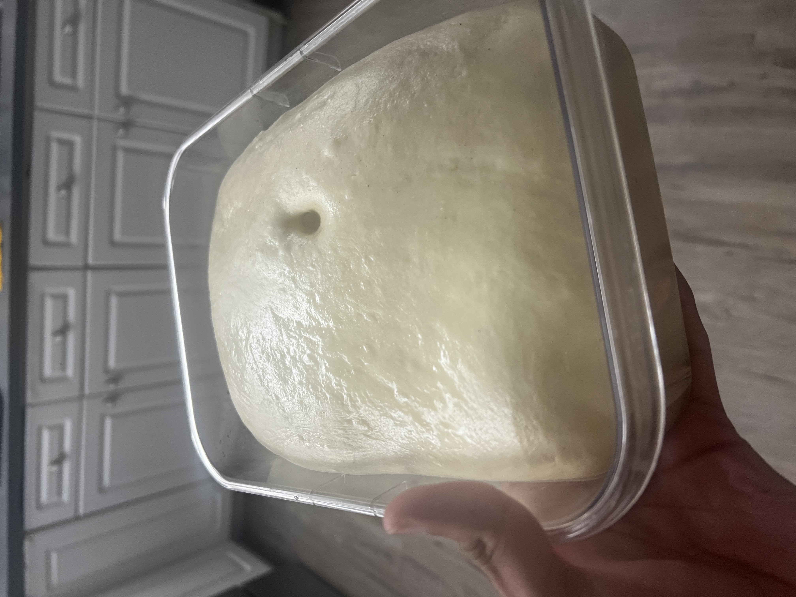

A pan pizza base recipe that's better than Pizza Hut's base.

Don't believe it? Try for yourself.
Requirements
- 12-14" Deep Dish Pizza Pan
- An oven.
- Dough kneader preferred but not required. I have KitchenAid.
Ingredients
- Bread Flour - 4 1/2 cups (22.5 ounces / 637.9 grams)
- Water - 1 1/2 cup (12.5 ounces / 354.4 grams)
- Powdered Milk - 3 tablespoons (0.5 ounce / 14.2 grams)
- Salt - 1 teaspoon (0.2 ounce / 5.7 grams)
- Sugar - 1 tablespoon (0.42 ounce / 11.9 grams)
- Vegetable Oil - 2 tablespoons (1 ounce / 28.4 grams)
Now for the steps to make the perfect pan pizza
-
In a stand mixer (KitchenAid) fitted with a dough hook, add the water, yeast and powdered milk.
- Mix thoroughly until yeast has fully dissolved.
- Mix the remaining dry ingredients together in a separate container and add them to the mixer.
- Mix on low (speed 2) until most of the flour and water have mixed, then continue kneading for 10 minutes. The dough will be loose and scrappy at first and will quickly form a moist, smooth cohesive ball (while the dough is still scrappy, add the vegetable oil one tablespoon at a time).
- While the dough is kneading, add 1/2 cup (4 ounces) of vegetable oil to a 14" pan style pizza pan making sure that the oil completely covers the bottom.
- After the dough has been kneaded for 10 minutes, remove it from the mixing bowl and, using a rolling pin, roll it out to approximately 3/4" thick and about 12" in diameter. If you have more dough than you need, save the remainder for another time.
- Place the dough in the pan and cover tightly.
- Let the dough rise until it has filled the entire pan and is about 1 1/2" thick.
- Place the pan (still covered) into the refrigerator for at least 4 hours (up to 24 hours).
Pro tip: I usually put it in the refrigerator and then make it the next day.
When ready to make
- Preheat oven to 500 °F for about 30-45 minutes.
- Remove dough from the refrigerator and add sauce, cheese, and toppings.
- Bake at 500 °F on a pizza stone for 14 minutes.